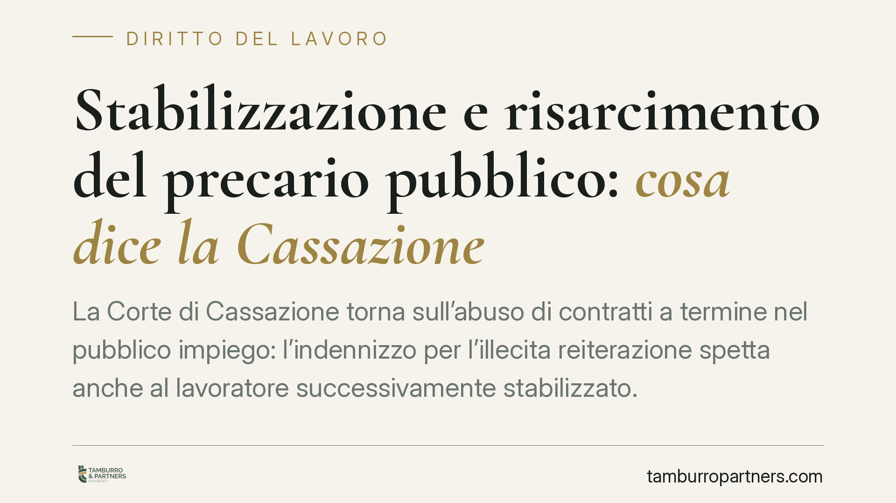

Stabilizzazione e risarcimento del precario pubblico: cosa dice la Cassazione
La Corte di Cassazione torna sull'abuso di contratti a termine nel pubblico impiego: l'indennizzo per l'illecita reiterazione spetta anche al lavoratore successivamente stabilizzato. L'immissione in ruolo, infatti, non assorbe il danno già maturato. Per migliaia di lavoratori pubblici si tratta di una tutela che resta esigibile anche dopo l'assunzione definitiva.

Il caso
La questione nasce da un operatore impiegato con lavori socialmente utili presso un Comune siciliano, poi stabilizzato. Il tema giuridico è se la successiva immissione in ruolo faccia venire meno il diritto al risarcimento per la precedente, abusiva reiterazione di contratti a termine.
La Cassazione, in linea con il proprio orientamento consolidato, chiarisce che la risposta è negativa: l'indennizzo si svincola dall'avvenuta stabilizzazione. Si tratta di due vicende distinte. La stabilizzazione riguarda il rapporto futuro; il risarcimento ristora un illecito già consumato.
*Nota sulla citazione:* il riferimento numerico e l'anno della pronuncia (indicati nella fonte come «2026») presentano un dato cronologicamente anomalo e non verificabile alla data di redazione. Riportiamo quindi il principio di diritto, che è stabile nella giurisprudenza di legittimità, senza vincolarlo a un estremo numerico incerto. Consigliamo di verificare gli estremi esatti prima di qualunque uso processuale.
Inquadramento normativo
Il punto di partenza è l'art. 36, comma 5, D.lgs. 165/2001. La norma, per il pubblico impiego, esclude che la violazione delle regole sull'assunzione a termine possa trasformare il rapporto in un contratto a tempo indeterminato. È la differenza strutturale con il settore privato, dove l'abuso porta alla conversione del rapporto. Nel pubblico, il divieto di conversione discende dal principio del concorso pubblico (art. 97 Cost.).
Resta però il problema della tutela. Se il lavoratore non può essere "convertito", come si sanziona l'abuso? Qui interviene il diritto dell'Unione. La Direttiva 1999/70/CE e l'accordo quadro allegato impongono agli Stati membri misure effettive, proporzionate e dissuasive contro l'utilizzo abusivo di una successione di contratti a termine. L'ordinamento italiano ha risposto riconoscendo un indennizzo di natura sanzionatoria, non un mero ristoro del danno patito.
Su questo si innesta il cosiddetto danno comunitario: un importo liquidato dal giudice secondo i parametri elaborati dalla giurisprudenza (storicamente la forbice tra 4 e 24 mensilità, mutuata dall'art. 32 L. 183/2010). Va segnalato che il DL 131/2024 (c.d. decreto «salva-infrazioni») è intervenuto sulla materia delle tutele contro l'abuso di contratti a termine nel pubblico impiego, in risposta ai rilievi dell'Unione europea. L'esatta portata delle nuove misure risarcitorie è in fase di consolidamento interpretativo: non è corretto, allo stato, affermare in modo apodittico che la forbice resti invariata. Consigliamo di verificare il quadro applicabile al singolo rapporto in base alla data dei fatti.
Perché la stabilizzazione non chiude la partita
Il nucleo del ragionamento è la natura dell'indennizzo. Se fosse un semplice ristoro per la mancata assunzione stabile, la successiva stabilizzazione lo renderebbe superfluo. Ma la funzione è diversa: l'indennizzo serve a dissuadere la pubblica amministrazione dal reiterare l'abuso. Questa finalità resta integra a prescindere dall'esito successivo del rapporto.
In altri termini, la stabilizzazione copre il futuro, non cancella l'illecito passato. Il lavoratore che ha subito anni di precariato irregolare ha maturato un diritto autonomo, che sopravvive all'immissione in ruolo.
Implicazioni pratiche
Per il lavoratore pubblico oggi stabilizzato, ma in passato impiegato con una catena di contratti a termine, il diritto al risarcimento può essere ancora esigibile. Due aspetti meritano attenzione.
Primo, l'onere della prova. È il lavoratore a dover dimostrare l'abusiva reiterazione: numero, durata e successione dei rapporti, eventuale assenza di ragioni oggettive. La documentazione contrattuale è decisiva.
Secondo, la prescrizione. Il diritto al risarcimento non è imprescrittibile. Il regime applicabile dipende dalla qualificazione dell'azione: in linea di principio il risarcimento da inadempimento contrattuale segue il termine decennale, mentre altre ricostruzioni ipotizzano il termine quinquennale. La questione non è pacifica e incide sull'individuazione del dies a quo. È un profilo da valutare caso per caso, prima che il decorso del tempo pregiudichi la pretesa.
Cosa fare in concreto
- Ricostruisci la cronologia di tutti i contratti a termine, con date di inizio e fine, mansioni e provvedimenti di proroga.
- Raccogli e conserva contratti, buste paga, comunicazioni di assunzione e ogni atto che documenti la successione dei rapporti.
- Verifica i termini di prescrizione applicabili alla tua posizione, perché il tempo può erodere il diritto.
- Accerta il quadro normativo vigente al momento dei fatti, considerando le modifiche introdotte dal DL 131/2024.
- Richiedi una valutazione specifica prima di agire: i parametri risarcitori e l'onere probatorio variano in funzione del singolo rapporto.
---
*Contributo informativo a cura di Tamburro & Partners - Avv. Giuseppe Tamburro. Non costituisce parere legale.*
Ogni storia di lavoro ha i suoi tempi.
Se gestisci HR e vuoi un confronto su contenzioso, ispezioni o licenziamenti, scrivi allo studio. Ti rispondiamo entro un giorno lavorativo.